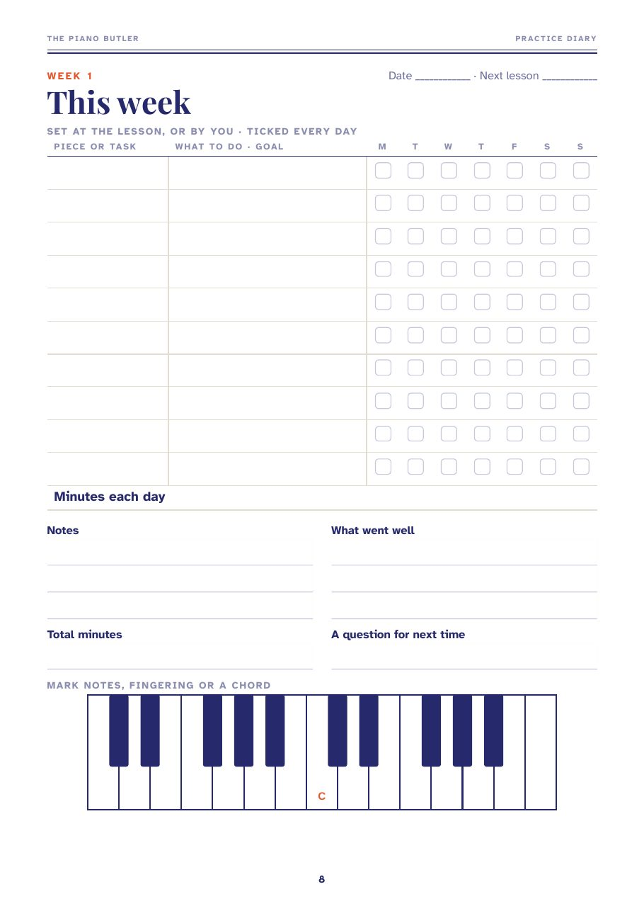
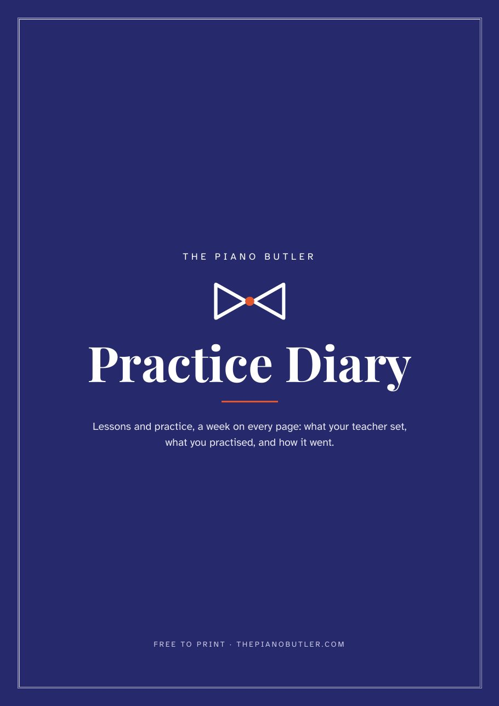
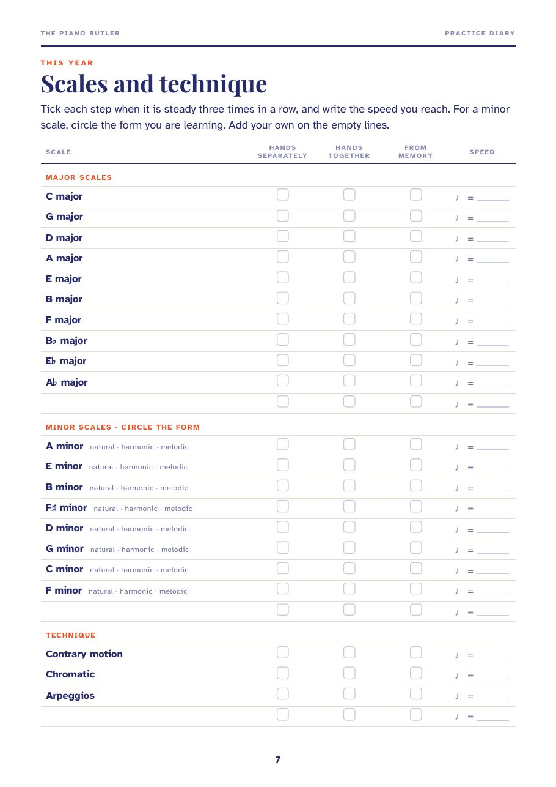
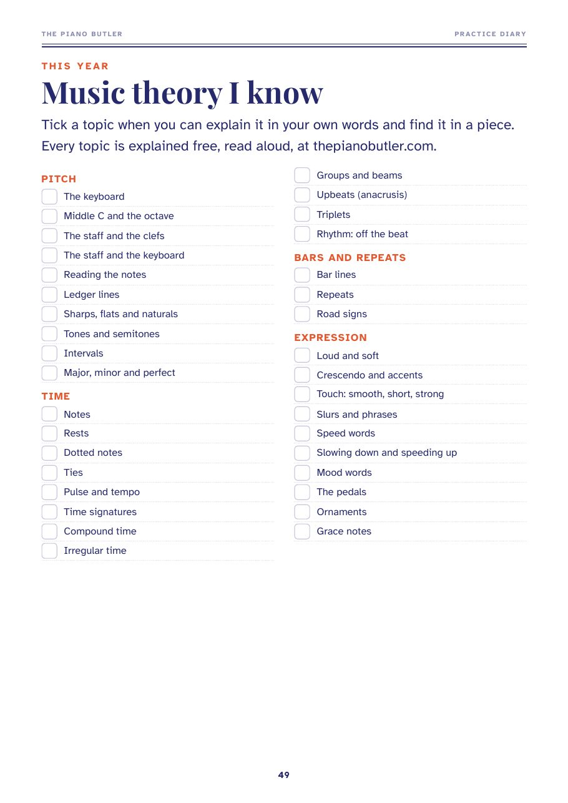

One page a week: write the week’s pieces and tasks, tick each one off every day you practise, and note how it went. It works with a teacher or on your own.
A4. Print the whole diary, or one week at a time. Free for yourself, your family and your students: please don’t sell or re-upload it, share this page’s link instead.

The cover
Scales and technique
Music theory I know